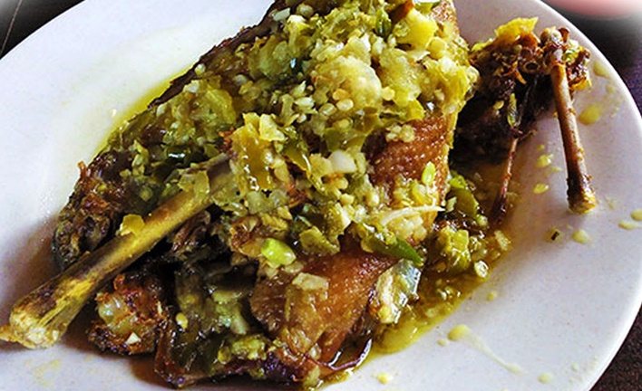

Makan malam paling enak makan lalapan beserta daging yang di goreng. Biasanya kita makan lalapan puyuh goreng, ayam goreng atau ikan bakar. Namun agar sedikit berbeda dari biasanya kita akan mencoba membuat menu yang sangat spesial untuk makan malam bersama keluarga dirumah yaitu bebek goreng sambal hijau. Bebek goreng saat ini menjadi primadona dalam urusan makanan namun sangat cocok jika dipadukan dengan sambal hijau yang akan menggugah selera makan Anda sekeluarga karena rasa pedas dari sambal hijau sehingga tambah lahap lagi ketika menyantap bebek goreng ini.
Bahan-bahan yang di siapkan untuk membuat bebek goreng sambal hijau:
- -1 ekor bebek, pilih yang ukuran sedang dan potong menjadi 4 bagian
- -2 lembar daun salam
- -2 lembar daun jeruk
- -1 sendok teh air jeruk nipis
- -1 batang serai, keprek atau memarkan
- -Air bersih sesuai kebutuhan
- -Minyak goreng secukupnya saja
Bumbu yang di haluskan:
- -1,5 sendok teh garam
- -4 biji bawang merah
- -4 siung bawang putih
- -2 ruas jari kunyit
- -2 biji kemiri
- -ketumbar bubuk secukupnya
- -1 ruas jari lengkuas
- -1 ruas jari jahe
Bahan untuk sambal cabai hijau:
- -10 buah cabai hijau keriting
- -5 buah cabe merah besar
- -3 butir bawang merah
- -3 siung bawang putih
- -1/2 sendok teh gula pasir
- -1/2 sendok teh garam halus
- -1/4 sendok teh kaldu ayam bubuk
- -1/4 sendok teh merica bubuk
- -3 buah tomat hijau
- -minyak goreng untuk menumis secukupnya
Langkah-langkah membuat bebek goreng sambal hijau adalah sebagai berikut:
- 1.Pertama -tama yaitu siapkan wadah untuk bebek dan lumuri dengan perasan air jeruk nipis yang sudah disiapkan sebelumnya. LKemudian biarkan kurang lebih 15 menit atau hingga perasan air jeruk meresap secara sempurna.
- 2.Kemudian rebus bebek bersama daun jeruk , daun salam, serai dan bumbu yang dudah dihaluskan hingga meresap secara merata.
- 3.Langkah selanjutnya Panaskan minyak goreng kemudian goreng bebek hingga matang dan berubah warna
- 4.Angkat bebek goreng nya dan sisihkan terlebih dahulu. Kemudian panaskan minyak untuk menumis bumbu cabe hijau yang sudah disiapkan
- 5.Tumis hingga tercium aroma yang harum dan layu lalu masukkan bebek yang sudah di goreng . Aduk-aduk hingga rata dan bumbu meresap secara sempurna
- 6.ika dirasa sudah matang maka angkat dan taruh pada piring saji
- 7.Bebek goreng cabe hijau siap untuk di sajikan di meja makan keluarga
Pedas banget rasa bebek goreng sambal hijau. Sangat cocok jika dinikmati bersama -sama keluarga dirumah. Sediakan es teh atau es jeruk saat menyantap nya karena pasti akan kepedasan setelah makan bebek goreng sambal hijau ini. Selamat menikmati dan segera coba di dapur kesayangan Anda dirumah cara membuat resep bebek goreng sambal hijau mantap banget.